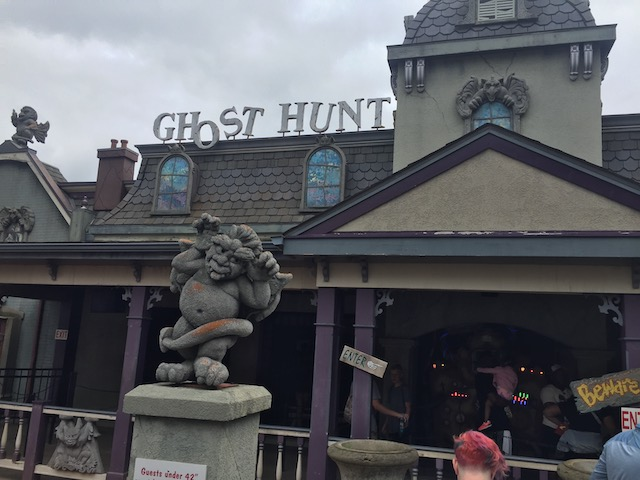
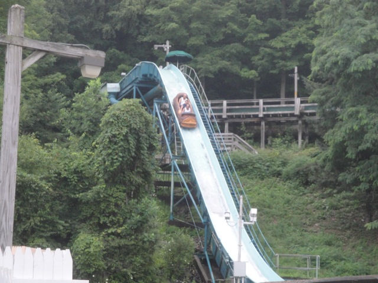
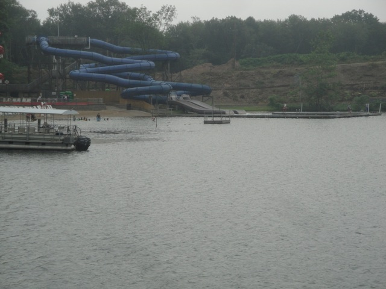
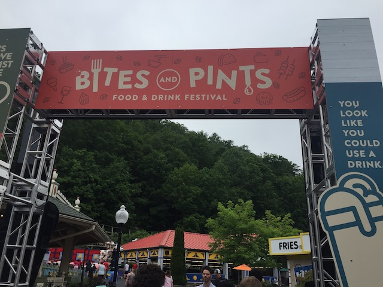

Lake Compounce is definetly one of the oldest amusement parks in the country and is the kind of theme park that pops into the minds of people when they think of your typical standard amusement park. And yeah, it's good. It's really good. There's a reason it's survived all these years. Hell, I've frequently compared it to another really old park that everyone praises, Kennywood. I mean, just think about it. Both parks have one signature amazing Top 10 Coaster, both parks have a nice flat ride collection, combinding old classic flats with cool new modern flats, and both have a really nice atmosphere, rich in history. While you don't see quite the contrast between the old and the new here since their star attraction is a wooden coaster hidden in the woods, which is not exactly something people consider as modern even if it was made right at the turn of the century. But throughout the park, there are all sorts of modern rides, just plopped right into the park, and you would never even notice that they're new or modern. They just blend in with the park so well that it's nearly impossible to tell unless you realize that Screamin Swings, Shooting Dark Rides, and Disk Os are modern day rides. And you don't need to. It's just that kind of park that you go to relax, unwind, and have a good time. I mean, there's a Top 10 Coaster here. So you can't complain about being bored here.
Here are the reviews of all the Flat Rides at Lake Compounce. The Flat Ride Collection is all right at Lake Compounce. It's not amazing or anything like that, but it's enjoyable. There's plenty of fun flat rides, even if they don't blow your socks off. So let's get started and review them. First off, let's get the star flat ride out of the way. Down Time. Yeah, the S&S Drop Tower. I know that S&S Towers are not my favorite, but it is the best flat ride in the park, and it's just a fun ride in general. I like the pop of airtime it has, and it's got a great view of the trees. You just see Boulderdash snaking through the trees, being awesome. Bonus points for that view. Let alone the cool theming it has. =) Next up, we got Thunder 'N' Lightning. The parks Screaming Swing is fun. I mean, it's a Screamin Swing!! You know that these are fun rides and all. We also got on Revolution, the park's Disk-O. It was a really fun ride, and ran a great program. But then again, it was brand new, but still. Finally, I rode the park's flyers and tornado ride. The flyers sucked since they were unsnappable. BOO!!! But their Tornado ride was awesome due to a spinning contest we had on the ride. I honestly don't even know who won. I just know that we got dizzy and I loved it. The park is also home to an enterprise, a wipeout, a pirate ship, some chairswings, a music express, and a ferris wheel.
Not the best S&S Tower, but it's got a nice view.
Dark Rides
Lake Compounce does indeed have a shooting dark ride called Ghost Hunt. You'll never guess what it's themed to? That's right. It's all about hunting ghosts. And I just have to admit it. It is one of the hardest shooting dark rides ever. I know I suck at shooting dark rides and have horrible aim, but on this thing, I only hit ONE target during the entire ride. Just ONE!!! That is sad. I mean, I'm about as good with this shooting dark ride as I am with a real gun!!! That is sad. That is REALLY sad.

Good luck trying to get a score higher than 0.
Water Rides
I rode the park's log flume, Saw Mill Plunge. And I will admit, that log flume is one of the better log flumes. It's up in the mountain, so once you go up the lift hill, you don't exactly know how high you are because you're up on a ledge. There's no reason for you to feel high up until the drop. And SPLASH!!! YOU WILL GET SOAKED ON THIS RIDE!!!! No joke, there is no escape. Oh, and there's also a rapids ride here, except I didn't ride it. So I'm not sure if it's great or if it sucks. But if it's like their log flume, then I've got my expectations set fairly high.

Not a single drop on those people is dry.
Water Park
And then there's their water park. I never went to it, but from photos I've seen, it does look cool. I don't even care about the slides themselves. I just like how they dump you into Lake Compounce. Yeah. It's litearlly a lake and the slides just plop you in. That alone makes me want to check it out for next time.

Best Water Slide Landing Ever.
Dining
Lake Compounce had some good food when I went there. Now granted, I didn't eat at an actual resteraunt there, but the food they served us was great. It consisted of a burrito bar, macaroni and cheese, and ribs. That is simply awesome. I realy hope this pops up at more parks. But even among the park's actual stuff, they have yep. That's right. Potato Patch Fries. I know I compared the park to Kennywood earlier, but this just SCREAMS Kennywood. I know that both parks are owned by Palace Parks, though I've been to a lot of their parks and there's really no theme between them and some of them are drastically different and you would never think they're related. But these two, the similarities are glaring. But thats not all. Much like another small park, Holiday World, the park offers free drinks. YES!!! THANK YOU!!! I LOVE YOU GUYS SO MUCH!!!! Also managed to visit during their Bites'N'Pints Food Festival. They had some good items there, though the desserts really could've used some work.
Definetly better than average theme park food.
I can not appreciate free soda enough. =)

It may be my least favorite Theme Park Food Festival so far, but it still had a few good options that I enjoyed.
Theming and Other Attractions
Here are the reviews of all the other stuff at Lake Compounce. For theming, well...there is none. Though I will say though that the park does have a good atmosphere set in the woods. I mean, Boulderdash has one of the best settings on any coaster. It just has you flying through the woods and...yeah. It's CRAZY!!! As for other attractions, I'm not sure what else they have at Lake Compounce. I'm sure they have other cool stuff, but I was too occupied with Boulderdash and just goofing off with friends. It didn't seem like there was any thing else really. I mean, we got a bunch of stuff done, but it just didn't seem like other stuff was their thing. But who knows. I'm a California local after all.
In Conclusion
Lake Compounce is a very fun place to go. It's not quite as good as it's competetor park, Kennywood, as there's only one real stand out ride, Boulderdash. Everything else is pretty...meh. So in a sense, Lake Compounce could use another fun coaster. I mean, I know it already has a Top 10 Coaster, but the 2nd best coaster is a Sky Rocket (I assume. It was closed when I was there, but I can safely predict that after riding clones). But even so, Lake Compounce is just a great park to ride stuff and have fun at. There's no reason to not go. It's got a great selection of rides, free soda, and one of the best wooden coasters of all time. So quit waiting around and get over to Lake Compounce today. =)
Enthusiast FAQs.
*Are there kiddy coaster restrictions? -Yes. Kiddy Coaster does require a child to ride. I got on it during a special private event.